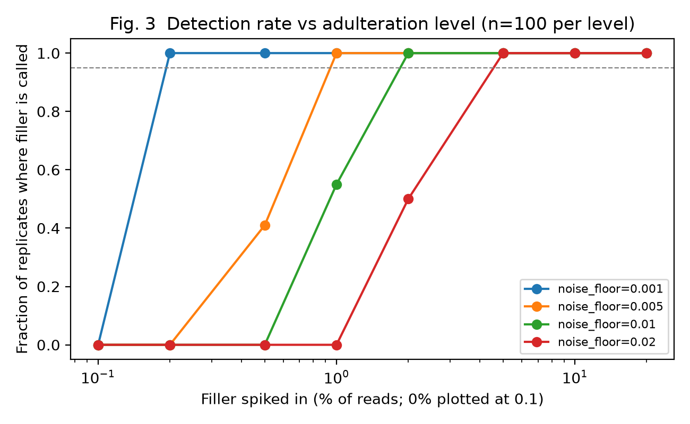

Exploring botanical authentication through DNA.
Curcuma longa + wheat
Retained species composition
Default read-fraction floor
65.67% declared species
After noise filtering
Noise floor → minimum tested filler fraction with ≥95% detection.

Generated by the project · Read fractions, not biomass
Reproducible. Inspectable. Open.
github.com/ypadhi27/dna-detective
Simulation validated · Real-data validation pending